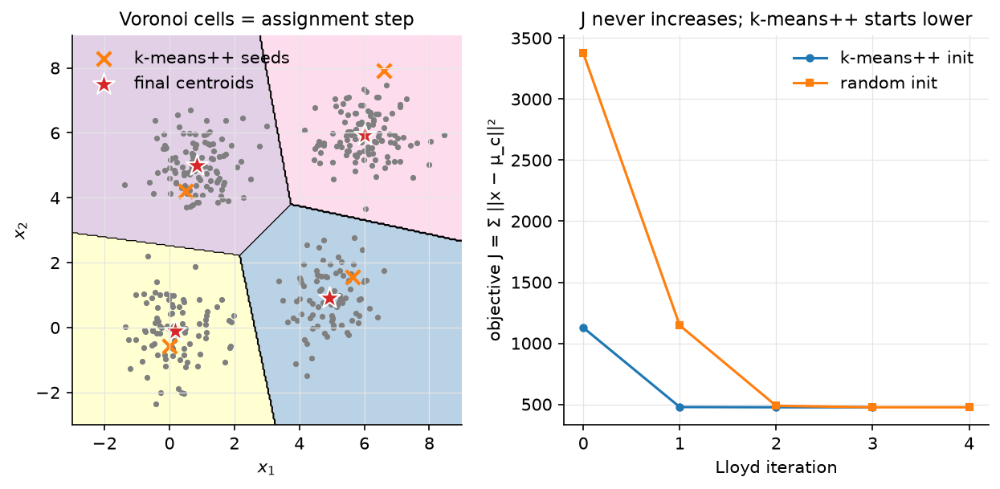

KNN & K-means¶
Why this matters at staff level. Nearest-neighbour search and k-means are the two algorithms underneath every retrieval system, vector database, RAG pipeline and embedding-dedup job you will be asked to design. Interviewers use KNN to test whether you understand the curse of dimensionality and the brute-force / tree / approximate trade-off, and k-means to test whether you can prove convergence, explain k-means++, and connect Lloyd's algorithm to EM and coordinate descent. Strong signal is implementing both in ten minutes, stating the \(O(\log k)\) seeding guarantee, and knowing that FAISS's IVF and PQ indexes are k-means codebooks.
TL;DR: the interview card¶
- KNN: no training; predict by majority vote / mean of the \(k\) nearest points. Brute force is \(O(Nd)\) per query; \(k\) controls bias–variance (\(k = 1\): zero training error, high variance; \(k = N\): the prior).
- Distances: Euclidean \(\sqrt{\norm{q}^2 + \norm{x}^2 - 2q\cdot x}\) (one matmul for all pairs), cosine (normalise then dot), Manhattan. Scale features or the largest-range feature owns the metric.
- Curse of dimensionality: for i.i.d. points in high \(d\), \(\frac{\max\text{dist} - \min\text{dist}}{\min\text{dist}} \to 0\). all neighbours look equally far; kd-trees degrade to brute force beyond \(d \approx 10\)–20. Real embeddings have low intrinsic dimension, which is why ANN (IVF, HNSW, PQ; Part XIII) works.
- K-means objective \(J = \sum_i\norm{x_i - \mu_{c_i}}^2\). Lloyd: assign (nearest centroid) then update (mean). Each step is an exact minimisation of \(J\) over one block of variables \(\Rightarrow\) \(J\) is non-increasing; finitely many partitions \(\Rightarrow\) terminates. Local minima only; NP-hard in general.
- Assignment step = Voronoi partition; update step = centroid = minimiser of squared distance. K-means = hard EM for a spherical GMM with \(\sigma \to 0\).
- k-means++: pick the next seed with probability \(\propto D(x)^2\). \(\boxed{\E[J] \le 8(\ln k + 2)\,J_{\text{opt}}}\) (Arthur & Vassilvitskii 2007), before any Lloyd iteration.
- Choosing \(k\): elbow on \(J\) (always decreasing), silhouette, gap statistic, or downstream utility (for a codebook, \(k\) is set by the memory/recall budget).
- Mini-batch k-means (Sculley 2010): per-centre learning rate \(1/n_j\), orders of magnitude cheaper on web-scale data.
- Production: FAISS IVF (coarse k-means quantiser,
nlistcentroids) and PQ (k-means with \(k = 256\) per sub-vector); SemDeDup uses k-means over embeddings to find near-duplicates at LAION scale; Spotify's Annoy for music recommendation.
1. Intuition first¶
Five 2-D points with labels: \((0,0){:}A\), \((1,0){:}A\), \((0,1){:}A\), \((5,5){:}B\), \((6,5){:}B\). Query \((1,1)\). Distances: \(\sqrt2, 1, 1, \sqrt{32}, \sqrt{41}\). With \(k = 3\) the vote is \(A, A, A\) → \(A\). That is the whole classifier; the "model" is the training set. All of the interesting questions are about finding the neighbours fast and about what "near" means when \(d = 768\).
Now forget the labels and ask for two groups. Start with two guessed centres, say \((0,0)\) and \((6,5)\). Assign each point to its nearer centre: \(\{(0,0),(1,0),(0,1)\}\) and \(\{(5,5),(6,5)\}\). Move each centre to the mean of its group: \((\tfrac13,\tfrac13)\) and \((5.5, 5)\). Re-assign: nothing changes. Done. Each half-step could only lower the total squared distance, which is why it stopped.

Figure. Left: the final centroids (stars) and their Voronoi cells, the assignment step is "which cell are you in"; the k-means++ seeds (crosses) already sit in different blobs. Right: the objective \(J\) per Lloyd iteration for k-means++ and random seeding; both are monotone, the good seeding starts lower and finishes in fewer steps.
2. The math¶
Uses: norms and inner products (linear algebra), concentration of measure and the multivariate Gaussian (probability).
2.1 KNN as a nonparametric estimator¶
For classification, KNN estimates \(P(y = k\mid x)\) by the fraction of class \(k\) among the \(k\) nearest training points, a locally constant density-ratio estimate. For regression it estimates \(\E[y\mid x]\) by the neighbours' mean. Cover and Hart's classic result: as \(N \to \infty\) with \(k = 1\), the error is at most twice the Bayes error; with \(k \to \infty\), \(k/N \to 0\), KNN is Bayes-consistent. Bias grows with \(k\) (the neighbourhood is wider), variance shrinks as \(1/k\).
Distances. Euclidean distances for all query–database pairs come from one matmul: \(\norm{q - x}^2 = \norm{q}^2 + \norm{x}^2 - 2\,q^Tx\), so \(D^2 = q^2\mathbf 1^T + \mathbf 1 x^{2T} - 2QX^T\) with \(Q \in \R^{M\times d}\), \(X \in \R^{N\times d}\), \(D^2 \in \R^{M\times N}\). For unit-norm vectors \(\norm{q - x}^2 = 2 - 2\cos\theta\), so cosine similarity and Euclidean distance give the same ranking; that is why embedding indexes normalise once and use inner product.
2.2 The curse of dimensionality¶
For \(N\) points drawn i.i.d. in \([0,1]^d\), the volume of a ball of radius \(r\) scales like \(r^d\), so to enclose a fixed fraction \(f\) of the data you need radius \(r = f^{1/d}\): with \(d = 100\), \(f = 0.01\) gives \(r = 0.955\), the "neighbourhood" spans almost the whole cube. Equivalently, for \(x, y\) i.i.d. with independent coordinates, \(\norm{x - y}^2\) is a sum of \(d\) i.i.d. terms, so its mean grows like \(d\) and its standard deviation like \(\sqrt d\); the relative spread of distances collapses as \(1/\sqrt d\), and Beyer et al. (1999) show that under mild conditions \(\frac{D_{\max} - D_{\min}}{D_{\min}} \to 0\) in probability. Nearest neighbour becomes meaningless for i.i.d. high-dimensional data.
Real data is not i.i.d. across coordinates: images, text embeddings and user histories live near low-dimensional manifolds, so the intrinsic dimension is what matters. Two consequences for practice: kd-trees (which need \(N \gg 2^d\)) are useless at \(d = 768\), but graph and quantisation-based approximate indexes still find true neighbours because the data's intrinsic dimension is small.
2.3 Exact search: brute force vs kd-tree¶
Brute force costs \(O(Nd)\) per query and \(O(N)\) for a top-\(k\) partial sort; with a BLAS matmul over a batch of queries this is bandwidth-bound and, on a GPU, handles \(10^6\)–\(10^7\) vectors of \(d = 128\) in milliseconds. A kd-tree splits on the axis of largest spread at the median, recursively; a query descends to a leaf then backtracks, pruning any subtree whose splitting plane is farther than the current \(k\)-th best. Expected query time is \(O(\log N)\) in low \(d\), but the number of leaves whose bounding boxes intersect the query ball grows exponentially with \(d\), so above \(d \approx 10\)–20 it visits most of the tree. Use kd-trees for geometry (\(d \le 3\)) and low-dimensional features; use brute force or ANN for embeddings.
2.4 K-means: objective, Lloyd's algorithm, convergence¶
Lloyd's algorithm is block coordinate descent on \(J\):
- Assignment step (\(\mu\) fixed): \(J\) is a sum over \(i\) of terms that depend only on \(c_i\), minimised by \(c_i = \argmin_j\norm{x_i - \mu_j}^2\). Geometrically, assign each point to the Voronoi cell of its nearest centroid.
- Update step (\(c\) fixed): \(J = \sum_j\sum_{i: c_i = j}\norm{x_i - \mu_j}^2\); each term is a convex quadratic in \(\mu_j\) with gradient \(-2\sum_{i:c_i=j}(x_i - \mu_j) = 0 \Rightarrow \mu_j = \frac{1}{n_j}\sum_{i:c_i=j}x_i\). The centroid.
Convergence. Each step minimises \(J\) exactly over its block, so \(J\) never increases. \(J\) is bounded below by \(0\), and there are at most \(k^N\) assignments; once an assignment repeats, the centroids are the same and the algorithm has stopped. So Lloyd terminates in finitely many steps at a local minimum (a partition where no single reassignment helps). The global problem is NP-hard even for \(k = 2\) in general \(d\), and the worst-case number of iterations is exponential, but in practice it is tens. Meaning: what you get depends on where you start.
K-means as hard EM. For a GMM with equal weights and shared covariance \(\sigma^2I\), the E-step responsibility is \(r_{ij} \propto \exp(-\norm{x_i - \mu_j}^2/2\sigma^2)\); as \(\sigma \to 0\) it becomes a one-hot on the nearest centroid (the assignment step), and the M-step for \(\mu_j\) is the responsibility-weighted mean (the update step). The EM chapter derives the soft version.
2.5 k-means++ seeding¶
Choose \(\mu_1\) uniformly from the data. For \(j = 2..k\), choose \(\mu_j = x\) with probability \(D(x)^2/\sum_{x'}D(x')^2\) where \(D(x)\) is the distance from \(x\) to the nearest already-chosen centre. Points far from every current centre are much more likely to be picked, so each true cluster tends to receive a seed, but the randomness protects against picking outliers every time (an outlier has large \(D^2\) but there is only one of it).
Guarantee (Arthur & Vassilvitskii 2007). For the seeding alone, before any Lloyd iteration,
an \(O(\log k)\)-competitive solution in expectation, whereas uniform seeding can be arbitrarily bad. Running Lloyd afterwards can only lower \(J\). The seeding costs \(k\) passes over the data, \(O(Nkd)\), the same as one Lloyd iteration.
2.6 Choosing \(k\) and scaling up¶
\(J\) decreases monotonically in \(k\) (with \(k = N\) it is \(0\)), so you cannot pick \(k\) by
minimising it. Options: the elbow of \(J(k)\); the silhouette
\(\frac{b - a}{\max(a, b)}\) per point (mean intra-cluster distance \(a\) vs nearest
other-cluster distance \(b\)); the gap statistic comparing \(\log J(k)\) against its value on
uniform reference data; or a downstream metric (recall at fixed latency for an
index; a model's accuracy for quantised embeddings). For codebooks \(k\) is set by the
budget: \(k = 256\) so a code fits in one byte, nlist \(\approx\sqrt N\) so each inverted
list has \(\sqrt N\) entries.
Mini-batch k-means. Draw a batch \(B\), assign it, and move each centre toward its batch members with a step size \(1/n_j\) where \(n_j\) counts every point ever assigned to \(j\): \(\mu_j \leftarrow (1 - \tfrac1{n_j})\mu_j + \tfrac1{n_j}x\). That is a running mean, so with all data it converges to the same fixed points as Lloyd, at a fraction of the cost; it is what you run on \(10^9\) embeddings.
3. Implementation¶
src/mlbook/classical/knn.py and src/mlbook/classical/kmeans.py.
def pairwise_distances(Q, X, metric="euclidean"):
if metric == "euclidean":
q2 = (Q * Q).sum(axis=1, keepdims=True) # (M, 1)
x2 = (X * X).sum(axis=1)[None, :] # (1, N)
sq = q2 + x2 - 2.0 * Q @ X.T # (M, N)
return np.sqrt(np.maximum(sq, 0.0)) # (M, N)
The maximum(…, 0) guards against \(-10^{-16}\) from cancellation when a query
coincides with a stored point. The Manhattan branch broadcasts to (M, N, d), which
is why it is only for small problems.
def knn_indices(Q, X, k, metric="euclidean"):
D = pairwise_distances(Q, X, metric) # (M, N)
part = np.argpartition(D, kth=k - 1, axis=1)[:, :k] # (M, k) unsorted k smallest
row = np.arange(Q.shape[0])[:, None] # (M, 1)
order = np.argsort(D[row, part], axis=1) # (M, k)
return part[row, order] # (M, k)
argpartition is \(O(N)\) per row; only the \(k\) survivors are sorted. KNNClassifier
accumulates votes into an (M, K) array (optionally weighted by \(1/(d + \epsilon)\)) and
KNNRegressor averages self.y[idx] along axis 1.
def query(self, q, k=1):
best_d = np.full(k, np.inf) # (k,)
best_i = np.full(k, -1) # (k,)
def visit(node):
nonlocal best_d, best_i
if node["leaf"]:
d = np.linalg.norm(self.X[node["idx"]] - q, axis=1) # (n_leaf,)
...merge into the k best...
return
diff = q[node["axis"]] - node["split"]
near, far = (node["left"], node["right"]) if diff <= 0 else (node["right"], node["left"])
visit(near)
if abs(diff) < best_d[-1]: # the far half-space may still hold a closer point
visit(far)
The pruning test is the entire kd-tree idea: the far subtree is skipped when the distance from \(q\) to the splitting plane already exceeds the current \(k\)-th best.
def kmeans_plusplus_init(X, k, rng):
N, d = X.shape
C = np.empty((k, d)) # (k, d)
C[0] = X[rng.integers(N)]
d2 = squared_distances(X, C[:1]).min(axis=1) # (N,) D(x)² to nearest chosen centre
for j in range(1, k):
probs = d2 / d2.sum() # (N,)
C[j] = X[rng.choice(N, p=probs)]
d2 = np.minimum(d2, squared_distances(X, C[j : j + 1])[:, 0]) # (N,)
return C
\(D^2\) is maintained incrementally with a minimum, so each new seed costs one pass
over the data rather than recomputing distances to all chosen centres.
def kmeans(X, k, n_iters=100, init="k-means++", seed=0, tol=1e-9):
...
for _ in range(n_iters):
labels = squared_distances(X, C).argmin(axis=1) # (N,) assignment step
history.append(kmeans_objective(X, C, labels))
new_C = C.copy()
for j in range(k):
members = X[labels == j] # (N_j, d)
if len(members) > 0:
new_C[j] = members.mean(axis=0) # (d,) update step
shift = float(((new_C - C) ** 2).sum())
C = new_C
if shift < tol:
break
An empty cluster keeps its old centroid (libraries typically re-seed it at the
farthest point). The history list is what the test checks for monotonicity.
def minibatch_kmeans(X, k, batch_size=256, n_steps=200, seed=0):
...
for _ in range(n_steps):
batch = X[rng.choice(X.shape[0], size=min(batch_size, X.shape[0]), replace=False)] # (B, d)
labels = squared_distances(batch, C).argmin(axis=1) # (B,)
for x, j in zip(batch, labels):
counts[j] += 1
eta = 1.0 / counts[j]
C[j] = (1.0 - eta) * C[j] + eta * x # (d,)
How you'd test it. tests/test_classical_knn_kmeans.py: pairwise distances
against the naive broadcast for all three metrics; knn_indices returns the true
\(k\) smallest, sorted; the kd-tree returns exactly the brute-force answer on 20 random
queries; the classifier and regressor reach expected accuracy; kmeans history is
non-increasing, its final objective equals kmeans_objective of the returned state,
and every recovered centre is within \(0.2\) of a planted one; k-means++ places one
seed per blob; mini-batch centres land within \(1.0\) of the truth.
Full implementation: src/mlbook/classical/knn.py
"""k-nearest neighbours: distance metrics, brute-force search and a kd-tree.
Brute force costs ``O(N d)`` per query (plus ``O(N)`` for a partial sort);
a kd-tree is ``O(log N)`` per query in low dimension but degrades toward
brute force once ``d`` exceeds roughly 10–20 (see the chapter). Beyond that,
use approximate methods (IVF/HNSW; Part XIII).
"""
from __future__ import annotations
import numpy as np
def pairwise_distances(Q: np.ndarray, X: np.ndarray, metric: str = "euclidean") -> np.ndarray:
"""Distances between every query and every stored point.
``Q``: (M, d), ``X``: (N, d) -> (M, N).
euclidean: ``||q - x||`` computed as ``sqrt(||q||² + ||x||² - 2 q·x)``;
manhattan: ``Σ |q_j - x_j|``; cosine: ``1 - q·x / (||q|| ||x||)``.
"""
if metric == "euclidean":
q2 = (Q * Q).sum(axis=1, keepdims=True) # (M, 1)
x2 = (X * X).sum(axis=1)[None, :] # (1, N)
sq = q2 + x2 - 2.0 * Q @ X.T # (M, N)
return np.sqrt(np.maximum(sq, 0.0)) # (M, N)
if metric == "manhattan":
return np.abs(Q[:, None, :] - X[None, :, :]).sum(axis=2) # (M, N) via (M, N, d)
if metric == "cosine":
Qn = Q / np.maximum(np.linalg.norm(Q, axis=1, keepdims=True), 1e-12) # (M, d)
Xn = X / np.maximum(np.linalg.norm(X, axis=1, keepdims=True), 1e-12) # (N, d)
return 1.0 - Qn @ Xn.T # (M, N)
raise ValueError(f"unknown metric {metric!r}")
def knn_indices(Q: np.ndarray, X: np.ndarray, k: int, metric: str = "euclidean") -> np.ndarray:
"""Indices of the ``k`` nearest stored points for each query.
``Q``: (M, d), ``X``: (N, d) -> (M, k), sorted by increasing distance.
``argpartition`` finds the k smallest in ``O(N)`` and only those are sorted.
"""
D = pairwise_distances(Q, X, metric) # (M, N)
part = np.argpartition(D, kth=k - 1, axis=1)[:, :k] # (M, k) unsorted k smallest
row = np.arange(Q.shape[0])[:, None] # (M, 1)
order = np.argsort(D[row, part], axis=1) # (M, k)
return part[row, order] # (M, k)
class KNNClassifier:
"""Majority vote among the ``k`` nearest training points (optionally distance-weighted)."""
def __init__(self, k: int = 5, metric: str = "euclidean", weighted: bool = False) -> None:
self.k, self.metric, self.weighted = k, metric, weighted
self.X: np.ndarray | None = None
self.y: np.ndarray | None = None
self.n_classes = 0
def fit(self, X: np.ndarray, y: np.ndarray) -> "KNNClassifier":
"""Store the data: training is ``O(1)``. ``X``: (N, d), ``y``: (N,) ints."""
self.X, self.y = X, y.astype(int)
self.n_classes = int(self.y.max()) + 1
return self
def predict_proba(self, Q: np.ndarray) -> np.ndarray:
"""``Q``: (M, d) -> (M, K) vote fractions."""
idx = knn_indices(Q, self.X, self.k, self.metric) # (M, k)
labels = self.y[idx] # (M, k)
if self.weighted:
D = pairwise_distances(Q, self.X, self.metric) # (M, N)
w = 1.0 / (np.take_along_axis(D, idx, axis=1) + 1e-8) # (M, k)
else:
w = np.ones_like(labels, dtype=float) # (M, k)
votes = np.zeros((Q.shape[0], self.n_classes)) # (M, K)
for j in range(self.k):
votes[np.arange(Q.shape[0]), labels[:, j]] += w[:, j]
return votes / votes.sum(axis=1, keepdims=True) # (M, K)
def predict(self, Q: np.ndarray) -> np.ndarray:
return self.predict_proba(Q).argmax(axis=1) # (M,)
class KNNRegressor:
"""Mean of the ``k`` nearest targets. ``fit(X (N, d), y (N,))``; ``predict(Q (M, d)) -> (M,)``."""
def __init__(self, k: int = 5, metric: str = "euclidean") -> None:
self.k, self.metric = k, metric
self.X: np.ndarray | None = None
self.y: np.ndarray | None = None
def fit(self, X: np.ndarray, y: np.ndarray) -> "KNNRegressor":
self.X, self.y = X, y.astype(float)
return self
def predict(self, Q: np.ndarray) -> np.ndarray:
idx = knn_indices(Q, self.X, self.k, self.metric) # (M, k)
return self.y[idx].mean(axis=1) # (M,)
# --------------------------------------------------------------------------- #
# kd-tree (exact, Euclidean)
# --------------------------------------------------------------------------- #
class KDTree:
"""A minimal kd-tree for exact Euclidean nearest-neighbour queries.
Build: split on the axis with the largest spread at the median, recursively.
Query: descend to the leaf, then backtrack, pruning any subtree whose
splitting plane is farther than the current best distance.
"""
def __init__(self, X: np.ndarray, leaf_size: int = 8) -> None:
self.X = X # (N, d)
self.leaf_size = leaf_size
self.root = self._build(np.arange(X.shape[0]))
def _build(self, idx: np.ndarray) -> dict:
if len(idx) <= self.leaf_size:
return {"leaf": True, "idx": idx}
pts = self.X[idx] # (n, d)
axis = int(np.argmax(pts.max(axis=0) - pts.min(axis=0)))
order = np.argsort(pts[:, axis]) # (n,)
mid = len(idx) // 2
return {
"leaf": False, "axis": axis, "split": float(pts[order[mid], axis]),
"left": self._build(idx[order[:mid]]), "right": self._build(idx[order[mid:]]),
}
def query(self, q: np.ndarray, k: int = 1) -> tuple[np.ndarray, np.ndarray]:
"""``q``: (d,) -> (distances (k,), indices (k,)) sorted ascending."""
best_d = np.full(k, np.inf) # (k,)
best_i = np.full(k, -1) # (k,)
def visit(node: dict) -> None:
nonlocal best_d, best_i
if node["leaf"]:
d = np.linalg.norm(self.X[node["idx"]] - q, axis=1) # (n_leaf,)
cand_d = np.concatenate([best_d, d]) # (k + n_leaf,)
cand_i = np.concatenate([best_i, node["idx"]]) # (k + n_leaf,)
keep = np.argsort(cand_d)[:k] # (k,)
best_d, best_i = cand_d[keep], cand_i[keep]
return
diff = q[node["axis"]] - node["split"]
near, far = (node["left"], node["right"]) if diff <= 0 else (node["right"], node["left"])
visit(near)
if abs(diff) < best_d[-1]: # the far half-space may still hold a closer point
visit(far)
visit(self.root)
return best_d, best_i
Full implementation: src/mlbook/classical/kmeans.py
"""k-means: Lloyd's algorithm, k-means++ seeding, and mini-batch k-means.
Objective: ``J(C, μ) = Σ_i ||x_i - μ_{c_i}||²``. Lloyd alternates
(1) assign each point to its nearest centroid (minimises J over ``c`` with ``μ``
fixed) and (2) move each centroid to the mean of its points (minimises J over
``μ`` with ``c`` fixed). Both steps can only lower J, and there are finitely many
assignments, so the algorithm terminates at a local minimum.
"""
from __future__ import annotations
import numpy as np
def squared_distances(X: np.ndarray, C: np.ndarray) -> np.ndarray:
"""``||x_i - c_j||²`` for all pairs. ``X``: (N, d), ``C``: (k, d) -> (N, k)."""
x2 = (X * X).sum(axis=1, keepdims=True) # (N, 1)
c2 = (C * C).sum(axis=1)[None, :] # (1, k)
return np.maximum(x2 + c2 - 2.0 * X @ C.T, 0.0) # (N, k)
def kmeans_objective(X: np.ndarray, C: np.ndarray, labels: np.ndarray) -> float:
"""``Σ_i ||x_i - C[labels_i]||²``. ``X``: (N, d), ``C``: (k, d), ``labels``: (N,)."""
diff = X - C[labels] # (N, d)
return float((diff * diff).sum())
def kmeans_plusplus_init(X: np.ndarray, k: int, rng: np.random.Generator) -> np.ndarray:
"""k-means++ seeding (Arthur & Vassilvitskii 2007).
First centre uniform at random; each next centre is drawn with probability
proportional to ``D(x)²``, its squared distance to the nearest centre chosen
so far. The expected objective is within ``O(log k)`` of optimal.
``X``: (N, d) -> ``C``: (k, d).
"""
N, d = X.shape
C = np.empty((k, d)) # (k, d)
C[0] = X[rng.integers(N)]
d2 = squared_distances(X, C[:1]).min(axis=1) # (N,) D(x)² to nearest chosen centre
for j in range(1, k):
probs = d2 / d2.sum() # (N,)
C[j] = X[rng.choice(N, p=probs)]
d2 = np.minimum(d2, squared_distances(X, C[j : j + 1])[:, 0]) # (N,)
return C
def kmeans(
X: np.ndarray, k: int, n_iters: int = 100, init: str = "k-means++", seed: int = 0, tol: float = 1e-9
) -> tuple[np.ndarray, np.ndarray, list[float]]:
"""Lloyd's algorithm. ``X``: (N, d) -> ``(C (k, d), labels (N,), objective history)``.
The history is non-increasing (each half-step is an exact coordinate minimisation).
"""
rng = np.random.default_rng(seed)
if init == "k-means++":
C = kmeans_plusplus_init(X, k, rng) # (k, d)
else:
C = X[rng.choice(X.shape[0], size=k, replace=False)] # (k, d) random rows
history: list[float] = []
labels = np.zeros(X.shape[0], dtype=int) # (N,)
for _ in range(n_iters):
labels = squared_distances(X, C).argmin(axis=1) # (N,) assignment step
history.append(kmeans_objective(X, C, labels))
new_C = C.copy()
for j in range(k):
members = X[labels == j] # (N_j, d)
if len(members) > 0:
new_C[j] = members.mean(axis=0) # (d,) update step
shift = float(((new_C - C) ** 2).sum())
C = new_C
if shift < tol:
break
labels = squared_distances(X, C).argmin(axis=1) # (N,)
history.append(kmeans_objective(X, C, labels))
return C, labels, history
def minibatch_kmeans(
X: np.ndarray, k: int, batch_size: int = 256, n_steps: int = 200, seed: int = 0
) -> np.ndarray:
"""Mini-batch k-means (Sculley 2010): per-centre learning rate ``1 / n_j``.
Each step draws a batch, assigns it, and moves each centre toward its
batch members with step size ``1 / (count so far)`` — a streaming mean.
``X``: (N, d) -> ``C``: (k, d).
"""
rng = np.random.default_rng(seed)
C = kmeans_plusplus_init(X, k, rng) # (k, d)
counts = np.zeros(k) # (k,) points seen per centre
for _ in range(n_steps):
batch = X[rng.choice(X.shape[0], size=min(batch_size, X.shape[0]), replace=False)] # (B, d)
labels = squared_distances(batch, C).argmin(axis=1) # (B,)
for x, j in zip(batch, labels):
counts[j] += 1
eta = 1.0 / counts[j]
C[j] = (1.0 - eta) * C[j] + eta * x # (d,)
return C
Retype by hand¶
Reproduce from memory:
| Symbol (file) | What it must do | Target time |
|---|---|---|
pairwise_distances (knn.py) |
the \(q^2 + x^2 - 2q\cdot x\) trick, cosine via normalisation | 6 min |
knn_indices (knn.py) |
argpartition then sort the \(k\) survivors |
5 min |
KNNClassifier, KNNRegressor (knn.py) |
vote accumulation (M, K); mean of y[idx] |
8 min |
KDTree (knn.py) |
median split on widest axis; descend + prune | 20 min |
squared_distances, kmeans_objective (kmeans.py) |
(N, k) squared distances; \(J\) |
4 min |
kmeans_plusplus_init (kmeans.py) |
incremental \(D^2\), sample \(\propto D^2\) | 8 min |
kmeans (kmeans.py) |
assign / update loop with objective history | 10 min |
minibatch_kmeans (kmeans.py) |
per-centre count, step \(1/n_j\) | 6 min |
Fine to just read: KNNClassifier.predict_proba weighting details, KDTree._build
dict layout.
Check with pytest tests/test_classical_knn_kmeans.py -q.
K-means with k-means++: 20 minutes; brute-force KNN: 10 minutes; kd-tree:
20 minutes.
4. Systems view: cost, failure modes, trade-offs¶
| Method | Build | Query | Memory | Recall | Use when |
|---|---|---|---|---|---|
| Brute force (flat) | 0 | \(O(Nd)\) | \(Nd\) floats | exact | \(N \le 10^6\) on GPU, re-ranking a shortlist |
| kd-tree | \(O(N\log N)\) | \(O(\log N)\) if \(d \lesssim 10\) | \(O(N)\) | exact | geometry, low-\(d\) features |
| IVF (k-means coarse quantiser) | k-means on sample, \(O(Nkd)\) | \(O(\text{nprobe}\cdot N/\text{nlist}\cdot d)\) | \(Nd\) (+ codes) | tunable via nprobe |
\(10^6\)–\(10^9\), RAM-bound |
| IVF + PQ | above + \(m\) k-means with \(k = 256\) | table lookups, \(O(m)\) per candidate | \(N\cdot m\) bytes | lower; re-rank | \(10^9\) vectors in RAM |
| HNSW | \(O(N\log N)\), high constant | \(O(\log N)\) | \(Nd\) + graph (large) | very high | \(\le 10^8\), RAM is available |
K-means costs \(O(Nkd)\) per Lloyd iteration; k-means++ seeding the same for the whole seeding. Training a PQ codebook with \(m = 8\) sub-vectors of \(d/m = 16\) dims and \(k = 256\) on a \(10^6\)-vector sample takes seconds; the resulting code is 8 bytes per vector instead of 512 (float32, \(d = 128\)).
Failure modes:
- Unscaled features let one coordinate dominate the metric. Standardise, or learn the metric (Mahalanobis, or an embedding model).
- KNN latency is at query time, not training time: fine for offline scoring, wrong for a 5 ms budget unless indexed.
- K-means with non-spherical or unequal-size clusters carves a big cluster in half and merges two small ones: the objective is isotropic squared distance. Use a GMM (full covariance) or a density method.
- Bad initialisation leaves a centre stranded on an outlier or two centres in one blob; k-means++ and multiple restarts (keep the lowest \(J\)) fix most cases.
- Empty clusters in mini-batch or with duplicate seeds: re-seed at the farthest point.
- Quantisation drift: a PQ codebook trained on last year's embeddings degrades on this year's distribution; retrain codebooks when the encoder changes.
When to use what. Exact answers over \(\le 10^6\) vectors: flat index on GPU. \(10^7\)–\(10^9\) vectors, recall \(\ge 0.9\) acceptable: IVF-PQ (memory-bound) or HNSW (RAM-rich, best recall/latency). Low-dimensional geometric queries: kd-tree. Clustering with a fixed budget of codes: k-means (mini-batch beyond \(10^7\) rows); overlapping or elongated clusters: GMM; unknown \(k\) and noise: DBSCAN/HDBSCAN.
5. In production¶
Meta (FAISS): k-means as the coarse quantiser and inside PQ
Problem: nearest-neighbour search over \(10^9\) image/text embeddings on a
handful of GPUs. What they built: IndexIVFPQ: a k-means coarse quantiser with
nlist centroids partitions the space (search visits nprobe inverted lists),
and product quantisation compresses each residual by splitting it into \(m\)
sub-vectors, each quantised with its own \(k = 256\) k-means codebook, so distances
are table lookups over bytes. Trade-off: memory and speed against recall,
tuned by nlist, nprobe, \(m\) and re-ranking. The FAISS wiki states
IndexIVFPQ is "probably the most useful indexing structure for large-scale
search". Johnson, Douze, Jégou, "Billion-scale similarity search with GPUs",
2017, arXiv:1702.08734; FAISS wiki
"Faiss indexes" and
"Guidelines to choose an index";
Jégou, Douze, Schmid, "Product Quantization for Nearest Neighbor Search",
TPAMI 33(1), 2011.
Meta AI (SemDeDup): k-means over embeddings to deduplicate LAION
Problem: web-scale datasets are full of near-duplicates that waste compute. What they built: embed every image with a pretrained encoder, run k-means over the embeddings, and search for semantic duplicates only within each cluster (pairwise search over \(10^8\) items is infeasible; within clusters it is not). Removing 50% of LAION this way preserved performance and halved training time. Abbas et al., 2023, arXiv:2303.09540.
Spotify: Annoy for music recommendation
What they built: a tree-based approximate nearest-neighbour library (random hyperplane splits, forest of trees, memory-mapped static index files so many processes share one copy) used after matrix factorisation to find similar tracks/users. Trade-off stated in the README: minimal memory footprint and instant loading, at the price of exactness. github.com/spotify/annoy.
Google: mini-batch k-means at web scale
Sculley's WWW 2010 paper introduced mini-batch k-means for the "extreme
requirements for latency, scalability, and sparsity encountered in user-facing
web applications", reporting orders-of-magnitude lower cost than batch Lloyd with
better solutions than online SGD; it is the MiniBatchKMeans you use in
scikit-learn. ACM DL.
6. Interview questions and strong answers¶
Prove that Lloyd's algorithm converges.
Show each step is an exact minimisation of \(J\) over one block: assignment minimises over \(c\) (nearest centroid), update minimises over \(\mu\) (the centroid is the minimiser of \(\sum\norm{x_i - \mu}^2\), gradient zero). So \(J\) is non-increasing and bounded below; there are finitely many assignments, so it terminates. Say explicitly: to a local optimum, and the global problem is NP-hard. Staff follow-up: what changes with mini-batch? Steps are noisy, \(J\) is no longer monotone, but the \(1/n_j\) schedule makes each centre a running mean and convergence holds in the stochastic-approximation sense.
Why k-means++? State the guarantee.
Uniform seeding can put two seeds in one cluster and none in another; Lloyd cannot recover because it is local. Sampling \(\propto D^2\) makes every uncovered cluster likely to receive a seed; Arthur & Vassilvitskii prove \(\E[J] \le 8(\ln k + 2)J_{\text{opt}}\) for the seeding alone. Follow-up: cost? \(k\) passes, \(O(Nkd)\), the same as one Lloyd iteration; parallel variants (k-means\(\|\)) sample many seeds per pass for distributed settings.
Explain the curse of dimensionality for KNN.
Distances between i.i.d. high-dimensional points concentrate: mean \(\propto d\), std \(\propto\sqrt d\), relative spread \(\to 0\), so the nearest neighbour is barely nearer than the farthest. Also, covering a fraction \(f\) of the data needs radius \(f^{1/d} \to 1\). Follow-up: then why does ANN over 768-d embeddings work? Intrinsic dimension is low (data lives near a manifold); neighbours are meaningful and graph/quantisation indexes exploit it.
Brute force vs kd-tree vs ANN: pick one for 100M 128-d vectors, 10 ms budget.
Brute force is \(1.3\times10^{10}\) FLOPs per query, too slow on CPU; kd-tree is
useless at \(d = 128\). IVF-PQ: \(\sqrt N \approx 10^4\) centroids, probe 32 lists,
scan \(3\times10^5\) codes with table lookups. That lands well inside 10 ms, at a memory cost of
\(\approx 100\text{M}\times 16\) bytes. HNSW if RAM allows the graph. Re-rank the top 100
with exact distances. Follow-up: how do you set nlist/nprobe? Sweep
recall@10 against latency on a held-out query set; the FAISS guidelines page is
the reference.
K-means is a special case of EM. Show it.
Spherical GMM with shared \(\sigma^2\) and equal weights: responsibilities are a softmax of \(-\norm{x - \mu_j}^2/2\sigma^2\); as \(\sigma \to 0\) they become one-hot on the nearest centre (assignment), and the weighted-mean M-step becomes the plain mean (update). Follow-up: what does this tell you about k-means' failure modes? It assumes equal-variance spherical clusters; elongated or unequal clusters break it, and a full-covariance GMM is the fix.
How do you pick \(k\)?
Not by minimising \(J\) (monotone). Elbow, silhouette, gap statistic, stability across resamples, or the downstream metric. For a quantiser, \(k\) is dictated by the byte budget (\(k = 256\)) or by \(\sqrt N\) for balanced inverted lists.
A single feature with range 0–10⁶ is in your KNN. What happens?
It owns the metric; every other feature is noise. Standardise, or better, learn a metric or an embedding so that "near" means what the task means.
7. Exercises¶
★ Exercise 1. Show that the mean minimises \(\sum_i\norm{x_i - \mu}^2\) and that the minimum value is \(\sum_i\norm{x_i}^2 - n\norm{\bar x}^2\).
Solution
Gradient \(-2\sum_i(x_i - \mu) = 0 \Rightarrow \mu = \bar x\); the Hessian \(2nI\) is positive definite. Expand \(\sum_i\norm{x_i - \bar x}^2 = \sum_i\norm{x_i}^2 - 2\bar x^T\sum_ix_i + n\norm{\bar x}^2 = \sum_i\norm{x_i}^2 - n\norm{\bar x}^2\).
★★ Exercise 2. For \(x, y\) uniform on \([0,1]^d\) with independent coordinates, compute \(\E\norm{x - y}^2\) and \(\operatorname{Var}\norm{x - y}^2\), and conclude that the coefficient of variation of the squared distance is \(O(1/\sqrt d)\).
Solution
Per coordinate \(u = (x_j - y_j)^2\) with \(\E u = 1/6\) and \(\E u^2 = 1/15\), so \(\operatorname{Var}u = 1/15 - 1/36 = 7/180\). Summing \(d\) independent terms: \(\E = d/6\), \(\operatorname{Var} = 7d/180\), coefficient of variation \(\sqrt{7d/180}/(d/6) = \sqrt{7/5}/\sqrt d \approx 1.18/\sqrt d\).
★★ Exercise 3 (coding). Implement product quantisation: split \(d = 32\) into
\(m = 4\) sub-vectors, run kmeans with \(k = 16\) on each, encode every vector as 4
indices, and compute approximate distances from a query via precomputed
\((m, k)\) lookup tables. Check that the top-1 neighbour agrees with brute force on
\(\ge 80\%\) of 100 queries for 2000 Gaussian-blob vectors.
Solution
from mlbook.classical.kmeans import kmeans, squared_distances
rng = np.random.default_rng(0)
X = np.repeat(rng.standard_normal((20, 32)), 100, axis=0) + 0.3 * rng.standard_normal((2000, 32))
Q = X[rng.choice(2000, 100)] + 0.1 * rng.standard_normal((100, 32))
m, k, sub = 4, 16, 8
codebooks, codes = [], np.zeros((2000, m), dtype=int)
for s in range(m):
C, lab, _ = kmeans(X[:, s * sub:(s + 1) * sub], k, seed=s) # C: (k, sub)
codebooks.append(C); codes[:, s] = lab
hits = 0
for q in Q:
tables = np.stack([squared_distances(q[None, s * sub:(s + 1) * sub], codebooks[s])[0] for s in range(m)]) # (m, k)
approx = tables[np.arange(m)[None, :], codes].sum(axis=1) # (2000,) sum of m lookups
hits += approx.argmin() == squared_distances(q[None], X)[0].argmin()
assert hits >= 80
★★ Exercise 4. Show that with \(k\)-means\(++\) seeding, if the data consists of \(k\) well-separated identical clusters, the probability that all \(k\) seeds land in distinct clusters tends to 1 as separation grows, whereas with uniform seeding it is \(k!/k^k \approx e^{-k}\sqrt{2\pi k}\).
Solution
Uniform: the seeds are \(k\) i.i.d. draws over \(k\) equally likely clusters; all distinct with probability \(k!/k^k\) (Stirling gives the estimate). k-means++: after \(j\) seeds in distinct clusters, every point in a covered cluster has \(D^2 \le \delta^2\) (cluster diameter) and every point in an uncovered cluster has \(D^2 \ge \Delta^2\) (separation), so the probability of choosing an uncovered cluster is at least \(\frac{(k-j)\Delta^2}{(k-j)\Delta^2 + j\delta^2} \to 1\) as \(\Delta/\delta \to \infty\); multiply over \(j = 1..k-1\).
★★★ Exercise 5. Modify kmeans to handle empty clusters by re-seeding the
centroid at the point with the largest current \(D^2\), and prove that this
modification still yields a non-increasing objective.
Solution
In the update loop replace the if len(members) > 0 branch with an else that
sets new_C[j] = X[squared_distances(X, C).min(axis=1).argmax()]. Proof: an
empty cluster contributes \(0\) to \(J\); moving its centroid anywhere cannot raise
the assignment cost of the other points (they keep their current assignments,
which are only re-evaluated in the next assignment step, where \(J\) can only
drop), and the re-seeded point's own cost drops to \(0\). So \(J\) after the next
assignment step is \(\le\) the previous value.
References¶
- Arthur, D., Vassilvitskii, S. "k-means++: The Advantages of Careful Seeding." SODA 2007. PDF
- Lloyd, S. "Least Squares Quantization in PCM." IEEE Trans. Information Theory 28(2), 1982. DOI
- Sculley, D. "Web-scale k-means clustering." WWW 2010. ACM DL
- Beyer, K., Goldstein, J., Ramakrishnan, R., Shaft, U. "When Is 'Nearest Neighbor' Meaningful?" ICDT 1999. Springer; minds.wisconsin.edu
- Johnson, J., Douze, M., Jégou, H. "Billion-scale similarity search with GPUs." 2017. arXiv:1702.08734
- Jégou, H., Douze, M., Schmid, C. "Product Quantization for Nearest Neighbor Search." IEEE TPAMI 33(1), 2011. ACM DL
- FAISS wiki: Faiss indexes, Guidelines to choose an index
- Malkov, Y., Yashunin, D. "Efficient and robust approximate nearest neighbor search using Hierarchical Navigable Small World graphs." 2016. arXiv:1603.09320
- Abbas, A. et al. "SemDeDup: Data-efficient learning at web-scale through semantic deduplication." 2023. arXiv:2303.09540
- Spotify. Annoy. github.com/spotify/annoy